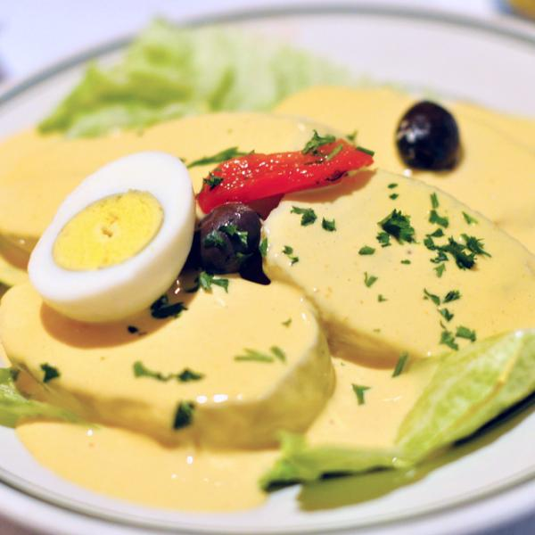

Papa a la Huancaina

La receta de las papas a la huancaína, o como se prepara como en Perú, es una delicia que no hay que dejar de probar. Las papas a la huancaína se hacen con ingredientes fáciles de conseguir: papa y huevo. Pero tiene sus secretos de aromas, especies y sabores que la hacen un manjar. Leé a continuación los ingredientes y el paso a paso para que te salgan riquísimas.
Ingredientes
- 4 papas medianas hervidas y frias
- 1 tarro de leche evaporada
- 6 galletas tipo agua
- aceite, cantidad necesaria
- 50 gr de queso de cabra
- 1 aji de escabeche
- sal al gusto
- hojas de lechuga para decorar
- huevo duro
- aceitunas negras
Preparacion
- Pelar el ají, quitarle el centro y sus nervaduras, cortarlo en trozos.
- Ponerlo en la licuadora con la leche evaporada, las galletas, el queso de cabra y sal.
- Verter aceite en cantidad suficiente y en forma de hilo como para obtener una salsa densa y amarilla.
- Pasar la salsa por tamiz, distribuir en los platos las papas cortadas en ruedas, cubrirlas con la salsa fría y decorar con medios huevos duros, hojas de lechuga y aceitunas negras.
Una receta sencilla de un plato típico peruano.
no consiguen leche evaporada, pueden reemplazarla por crema de leche
Regresar